home screen · touch · GPU
Apple's kernel and iOS 16, booted on a budget Android phone.
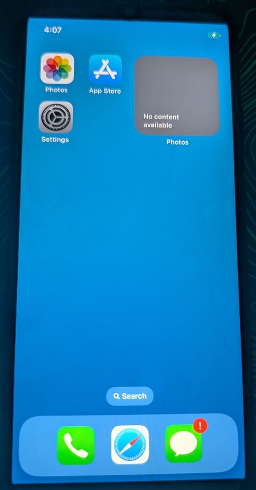
ioreg -l | grep status
It boots its own kernel image, reaches the home screen, takes touch and draws through its own Adreno GPU. Still a bring-up, not a daily phone: frame rate, battery and sound come next.
Stock Xiaomi bootloader, our shim, XNU on a Cortex-A73, from the phone's own boot slot.
The iPhone X root on HFS+ in userdata: lock screen, home screen, Settings.
Novatek NT36525B over SPI, its firmware uploaded at boot and again after the screen sleeps.
Adreno 610 through Mesa freedreno behind CoreAnimation.
The phone appears as a USB network device and streams its log to a PC.
About 15 frames a second: the CPU shrinks every frame. Next: let the display hardware scale.
Locating the SM5602 fuel gauge on this board for a real percentage.
Amp driver is ready; the audio DSP speaks Qualcomm's older APR protocol and needs its own driver.
dmesg | less
Most of it was debugged one panic screen at a time, photographed off the phone. Each entry is a real photo.
[ 2026-11-07 ] shim
Our boot shim draws its register dump, then moves from the Silver cores to a Gold core that can run XNU.
fastboot boot shim-boot.img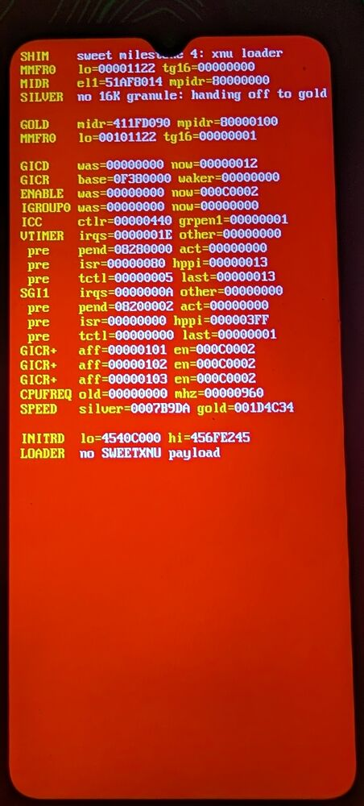
[ 2026-11-07 ] xnu
XNU boots on the Snapdragon 680 and scrolls its console.
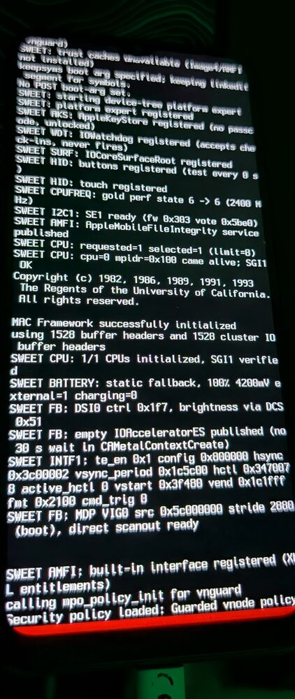
[ 2026-11-08 ] launchd
iOS starts from the root volume flashed into userdata.
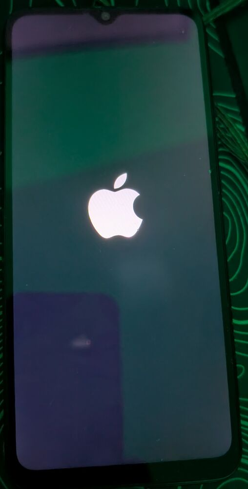
[ 2026-11-08 ] SpringBoard
After a long first boot, iOS shows its lock screen on Xiaomi hardware.
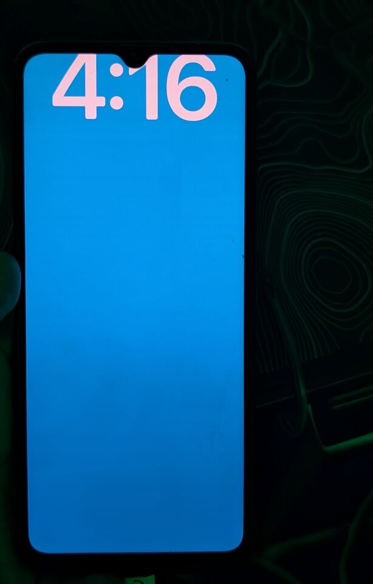
[ 2026-11-08 ] AppleCLCD
The 1125-wide iPhone canvas is scaled to the 720-pixel panel.
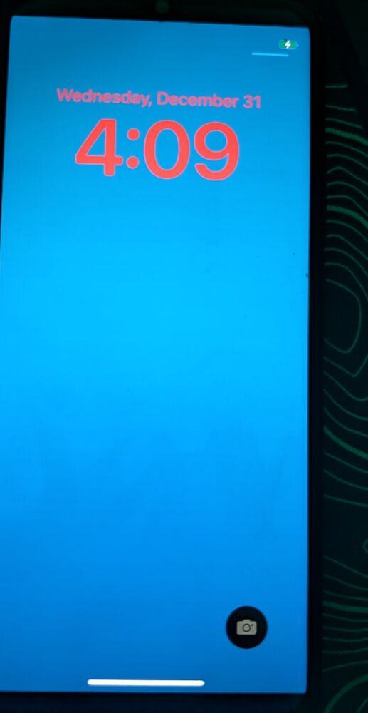
[ 2026-11-08 ] nvt-spi
After a dozen probes over SPI and DMA, the NT36525B reads back its ID.
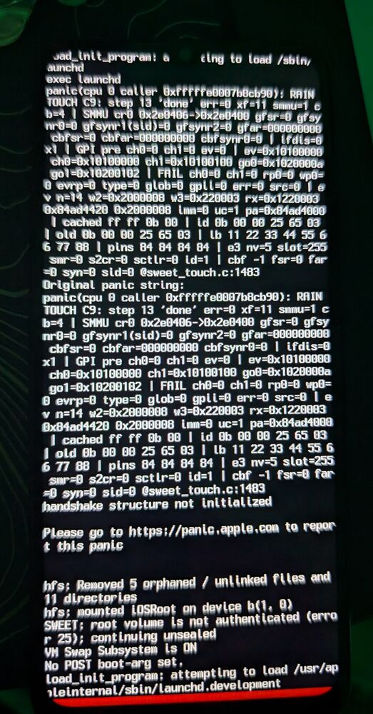
[ 2026-11-11 ] nvt-spi
Firmware uploaded, one finger followed across the glass.
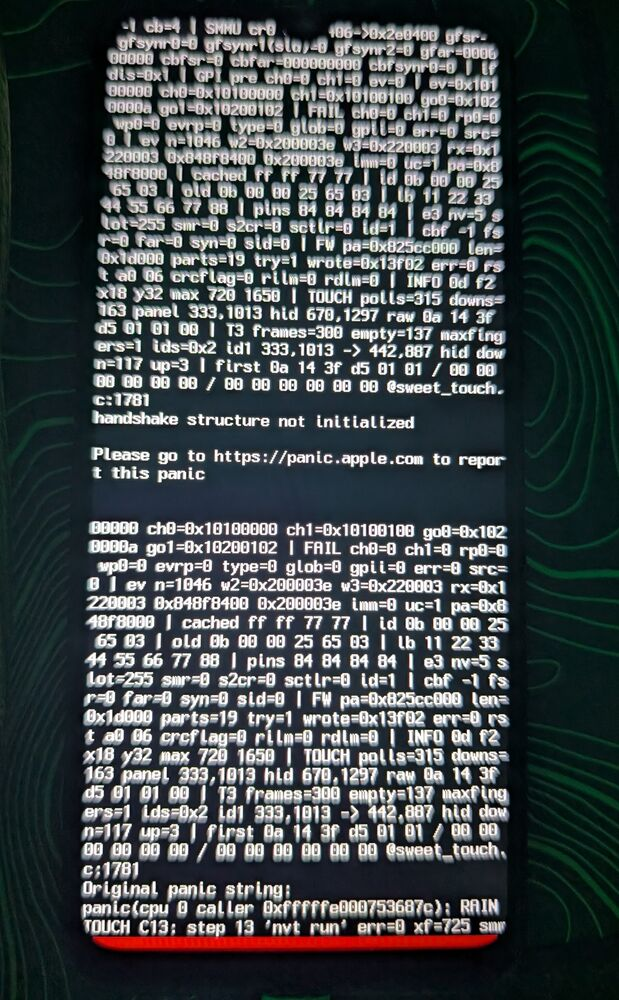
[ 2026-11-11 ] RedwoodGPU
Two memory fixes later, the Adreno 610 renders the interface.
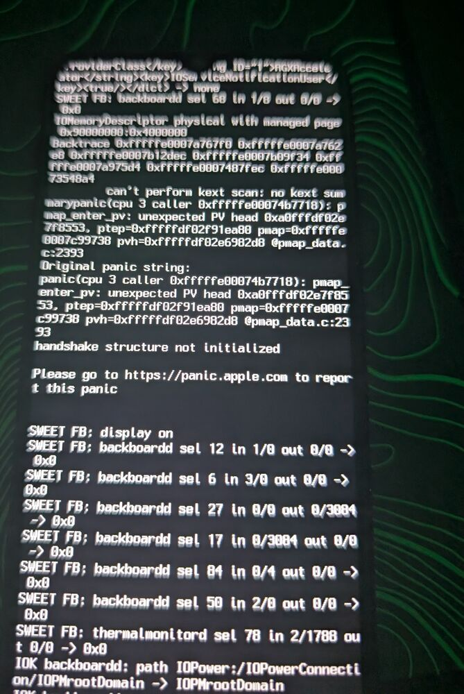
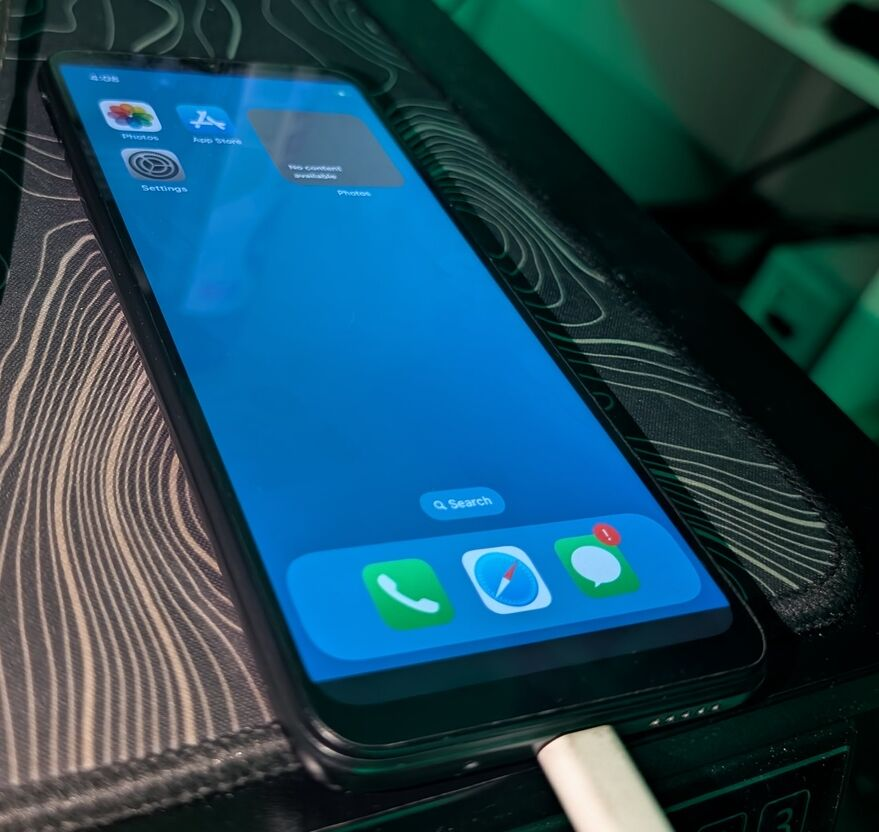
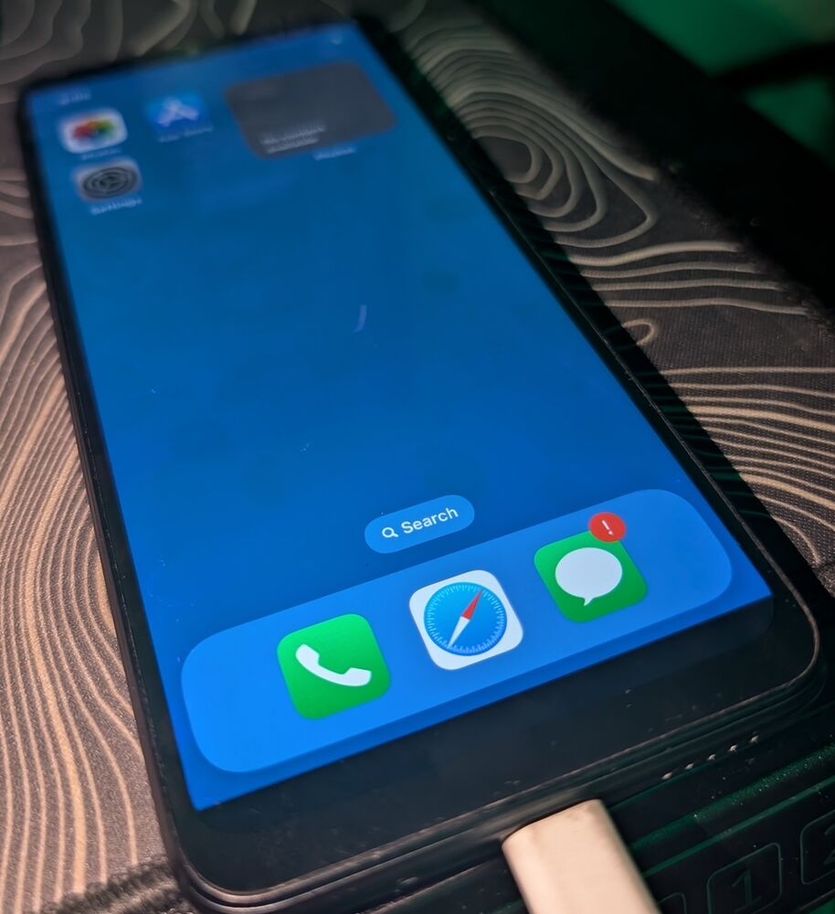
cat /proc/boot
Xiaomi's bootloader starts a small shim. From there it is Apple's kernel and Apple's userland, with drivers written for this hardware.
Loads our image like an Android kernel, from USB or the boot slot.
Hands off to a Cortex-A73 core with 16 KB pages, then loads XNU.
Apple's open-source kernel, patched for UFS, display, SPI touch, GPU and USB.
iPhone X iOS 16.7.16 on HFS+ in the userdata partition.
launchd, backboardd and SpringBoard, drawn by Mesa on the Adreno.
git log --follow
ios-rain is a fork. The groundwork came from the projects below; this one adds what the Redmi 10C needs.
Experimental. Installing it erases Android's user data. iOS itself is Apple's and is not distributed here; licences are in the repository's CREDITS.md.